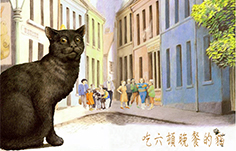
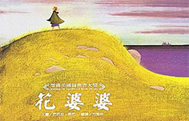

 讀書會名稱：從吃六頓晚餐的貓--看人與人的相處 繪本：吃六頓晚餐的貓 讀書會日期：2016/6/13 讀書會時間：晚上六點半 讀書會地點：Campus咖啡廳
 讀書會名稱：花婆婆的世界觀 繪本：花婆婆 讀書會日期：2016/6/21 讀書會時間：晚上六點半 讀書會地點：Imperfect咖啡廳
讀書會名稱：美女還是老虎？繪本中開放式結局的可能 繪本：美女還是老虎？ 讀書會日期：2016/6/25 讀書會時間：下午三點半 讀書會地點：Campus咖啡廳